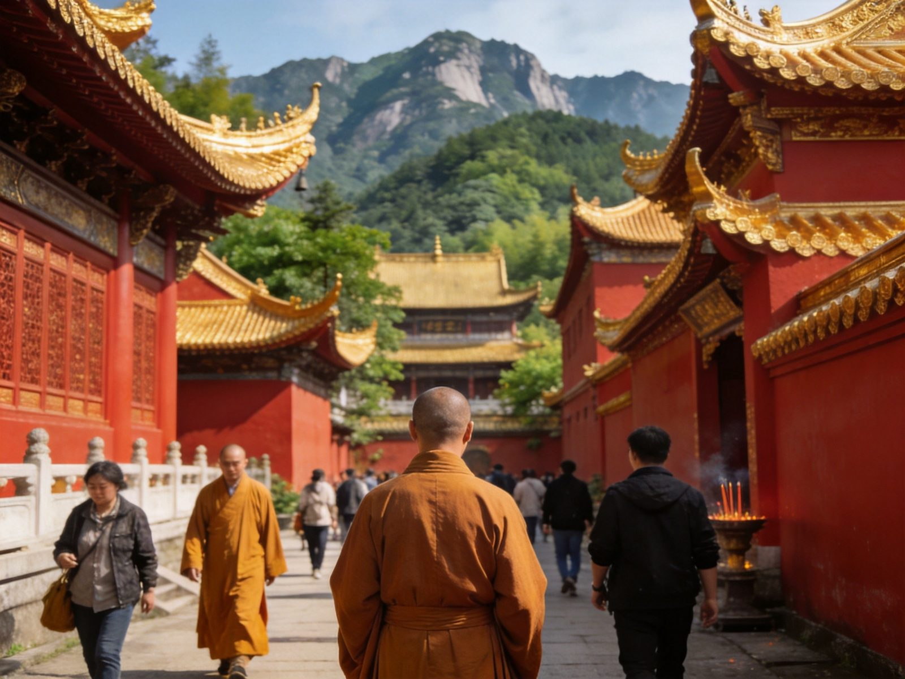
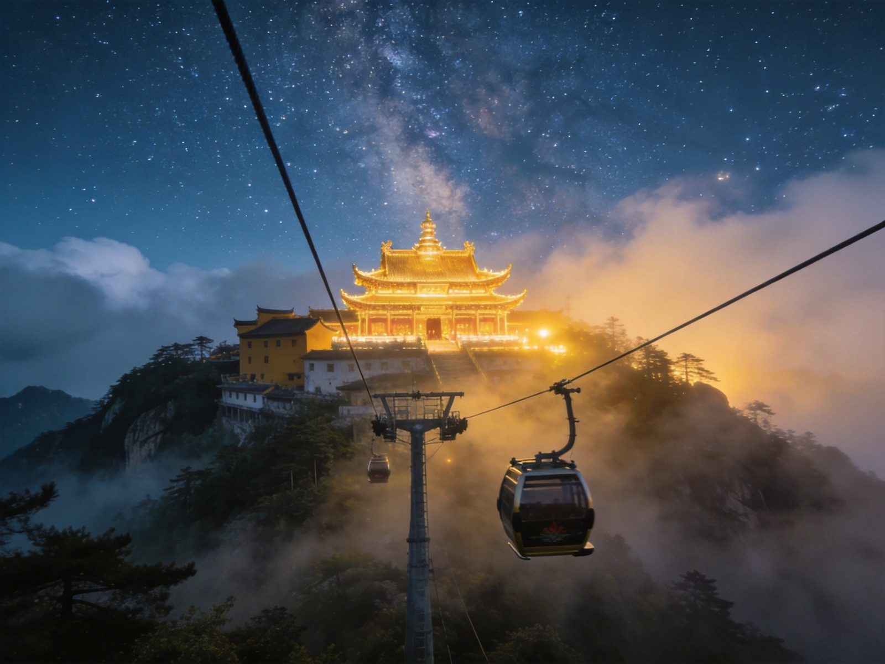

🙏 九华山 · MT. JIUHUA BUDDHIST MOUNTAIN
九华山 · 地藏道场佛国胜境全攻略
中国佛教四大名山之首，地藏王菩萨道场，一座「人人发愿、处处有佛」的肉身菩萨圣地。化城寺、肉身宝殿、百岁宫礼佛，天台、花台看山门群山。门票旺季 160 元、淡季 140 元，景区交通车 50 元 3 日无限次必购；2024 年新开的九华山站把高铁通勤缩短到 10 分钟，礼佛变得前所未有的省心。本文含 1 日/2 日双方案、礼佛路线、门票景交、索道价格、交通住宿、美食预算、避坑全讲清。
📍 目的地：安徽池州 · 九华山风景区
👥 1–6 人礼佛/观光
⏱️ 1 日 / 2 日 双方案
💰 旺季160 · 淡季140
⚡1 日礼佛 · 快充版
核心策略：九华山礼佛的重点寺庙都集中在半山的九华街平台，一天把化城寺、肉身宝殿、百岁宫走完即可完成主要心愿。
👥 1–3 人适配：上山必须坐景区交通车（50 元/3 日无限次，私家车禁上）；九华街是礼佛与吃住的核心区。
🗺️ 行程安排
-
上午 · 九华街核心寺庙群
🚄 九华山站→游客中心（打车约10min）→景交车
🏛️ 化城寺（开山祖寺）🙏 祇园寺（九华街口）
⚠️ 礼佛顺序通常「先见佛、后拜塔」：化城寺→祇园寺→肉身宝殿，顺时针不走回头路。
-
中午 · 肉身宝殿（地藏肉身安奉处）
🛕 肉身宝殿（金地藏肉身所在，核心圣迹）
💡 肉身宝殿台阶多，俗称「九十九级台阶」，慢慢上行；殿内不可拍照，保持肃静恭敬。
-
下午 · 百岁宫 + 下山
🚡 百岁宫索道（往返100；上55下50）🙏 百岁宫（指"无暇禅师"肉身所在地）
🚌 傍晚景交车返游客中心/高铁站
💡 百岁宫看「天然睡佛」最具代表性；单程上索道再下行可省一半索道钱并增加体验。
🌿2 日深度 · 松弛版
第一天从容礼佛半山，第二天上天台/花台看山和浦云海，把「佛国」与「名山」两层气质都收入囊中。
👥 1–3 人适配：住九华街最方便；想看日出云海上天台，备好厚外套与便鞋。
🗺️ 行程安排
-
DAY 1 · 九华街礼佛半日 + 大愿文化园
🛕 化城寺/祇园寺/肉身宝殿/百岁宫
🛕 下午 大愿文化园（99米地藏铜像）
💡 大愿文化园在景区外山下，铜像高达 99 米、气势恢宏，是新增的朝圣地标。
-
DAY 2 · 天台 / 花台看山 → 返程
🚡 天台索道（往返160；上85下80）⛰️ 天台峰（海拔1306m，九华之巅）
🌼 花台（海拔1299m，看群峰）🚌 下午返程
⚠️ 天台与花台体力消耗大，二选一即可（想看九华之巅选天台）；年长者建议全程索道往返。
⭐九华山核心看点 · 单独详览
把九华山最具代表性的 5 个点单独拎出来说清楚——礼什么、看什么、在哪。
天台 · 九华之巅
一线天台
天台峰 · 九华山最高峰
海拔 1306 米，九华山制高点，俗称「天台正顶」。登顶可俯瞰九华群峰、远眺长江；天台寺（万佛楼）建在峰顶，云雾缭绕时如悬空古刹。想看九华山的「山」，这里是最佳视角。
👍 必去理由：九华之巅必登。索道 + 一段步行组合省体力，雨后放晴云海最佳。

肉身宝殿 · 地藏圣迹
九华街
肉身宝殿 · 金地藏肉身安奉处
九华山最核心的圣迹，供奉唐代来华弘扬地藏法门的新罗王子金乔觉的肉身。殿宇金顶重檐、庄严宏伟，沿「九十九级台阶」上行参拜，是几乎所有香客必到的朝圣中心。
👍 必去理由：九华山信仰的核心。礼佛必到，保持恭敬、殿内不拍照。

化城寺 · 开山祖寺
九华街
化城寺 · 九华山开山祖寺
九华山历史最悠久的寺庙，始建于唐代，是地藏菩萨最初驻锡弘法之所，也是九华山的「心脏」。寺藏文物丰富，古色古香的建筑与大雄宝殿是礼佛路线的起点。
👍 必去理由：礼佛沿革的根。九华街寺庙群的起点，先到化城寺再顺路往肉身宝殿。
百岁宫 · 肉身菩萨
九华街
百岁宫 · 无暇禅师肉身所在地
建于明代，供奉 126 岁圆寂的九华山高僧「无暇禅师」的真身肉身，是九华山六大肉身菩萨中最负盛名的一处。从百岁宫还可远眺九华山脉形似「天然睡佛」的轮廓线。
👍 必去理由：肉身圣迹 + 睡佛奇观双料看点；索道往返最省力。
花台 · 看山赏景
花台
花台 · 奇峰林立看群山
海拔 1299 米，以奇峰、怪石、山花著称，与天台并称九华「双峰」。花台栈道与观景台散落山谷群峰之间，春日山花烂漫、雨后云海翻腾，是观光客看群山的首选。
👍 必去理由：不想冲顶、想看山的绝佳替代；索道+栈道不累，老少皆宜。
🚗怎么去：高铁 vs 汽车 vs 自驾
2024 年九华山站开通后，高铁成为最推荐方式；池州站亦可衔接专线。
九华山高铁/汽车/自驾三种交通方式对比
| 方式 | 🚄 高铁（九华山站） | 🚄 高铁（池州站） | 🚗 自驾 |
|---|
| 时长/成本 |
九华山站→游客中心打车约10分钟（新站最方便） |
池州站→景区专线约 20–25 元/50 分钟 |
江浙沪高速直抵，车停山下游客中心 |
|---|
| 适合人群 |
✔ 2026 最推荐：离山门最近的新高铁站 |
从池州方向衔接 |
自驾/带老人小孩 |
|---|
| 注意 |
出站打车或有接驳，末班注意返程 |
需换乘专线，耗时略长 |
节假日山脚停车紧张 |
|---|
| 💡 一句话建议：首选到九华山站——出站打车 10 分钟即到游客中心，再乘景区交通车（50元/3日）上山；私家车一律停在游客中心，乘景交进山。 |
|---|
📱 门票与景交：旺季（1.16–11.14）160 元、淡季 140 元；学生/60–64 半价 80 元、65 岁以上免票；景区交通车 50 元（3 日无限次）为刚需，可官方小程序购票快速入园。
🏨住宿推荐
想离寺庙近、方便礼佛就在九华街住，三档价位供参考。
经济型
九华街客栈
约 120–260 元/晚 · 人均 60–130
离化城寺/肉身宝殿近，简素干净，适合纯礼佛的快充行程。
舒适型
九华街精品民宿
约 280–550 元/晚 · 人均 140–280
带庭院/观山房，设施更好，非节假日性价比高。
礼佛体验
山上寺院/高档宾馆
约 500–1200 元/晚 · 人均 250–600
离寺更近、近天台者可看日出；住宿紧张需提前订。
🍜九华山必吃清单
九华街素斋著名，也兼有皖南徽菜与山珍风味。
💰预算对比（人均）
含 1–3 人出行说明；区间为保守–宽松，实际以选择为准。
九华山1日与2日方案人均预算对比
| 项目 | 1日礼佛版 | 2日深度版 |
|---|
| 大交通（江浙沪往返人均） | 约 150–350 | 约 150–400 |
|---|
| 门票（旺季） | 160 | 160 |
|---|
| 景区交通车（3日） | 50 | 50 |
|---|
| 索道 | 百岁宫往返100 | 百岁宫100+天台约160 |
|---|
| 住宿 | —（当日往返） | 1 晚 120–550 |
|---|
| 餐饮 | 约 60–120 | 约 150–280 |
|---|
| 合计 · 人均 | 约 520–780 | 约 850–1600 |
|---|
💡 省法：11 月 15 日后进入淡季，门票仅 140 元、含天台在内的部分索道同步调价更低、人少礼佛体验更佳；学生/60–64 半价、65+ 免票；索道只买单程下行可省一半。
🧭避坑 & 实用贴士
- 景交车必买：私家车禁上九华山，游客中心→九华街只能乘景区交通车（50 元/3 日），进山第一件事买景交门票。
- 礼佛有顺序：九华街寺庙群建议「化城寺→祇园寺→肉身宝殿」顺走；殿内一律不拍照、不喧哗，燃香按规定到指定香炉。
- 索道按需买：百岁宫往返 100（上55下50）、天台/花台往返 160（上85下80）；体力好可只买上行、下行徒步，单程省一半。
- 天台花台二选一：二者都是看山，体力与时间有限不必都去；想看九华之巅选天台，想省力看群峰选花台。
- 住九华街最方便：礼佛核心区吃住齐全，免去来回奔波；想在天台看日出云海再住山上，但房间紧张需极早预订。
- 淡季更划算：11 月中旬后转淡季，价格更低、香客更少、礼佛更从容；雨雪天路滑，备防滑鞋与厚外套。